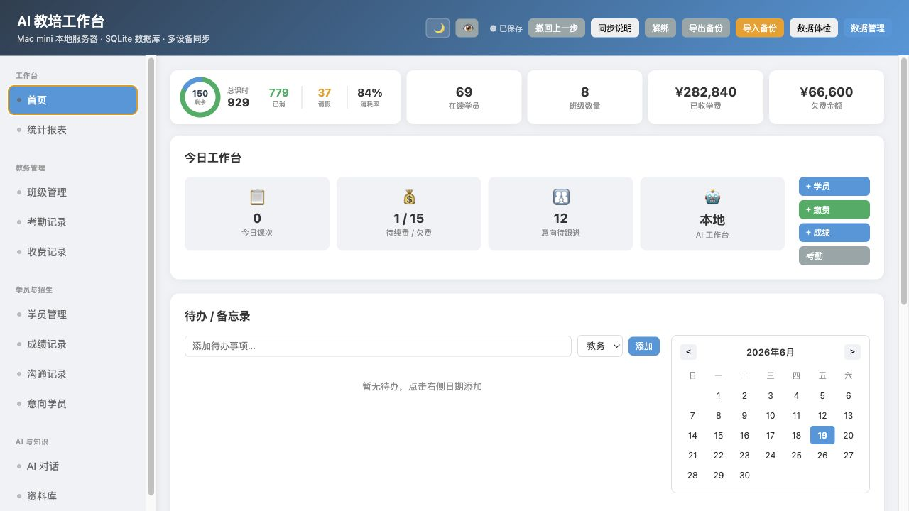
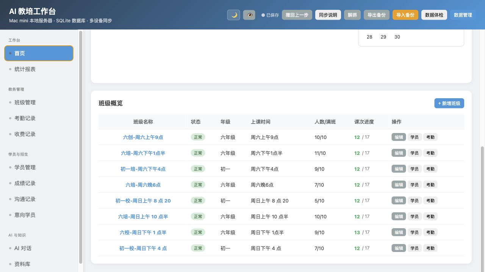
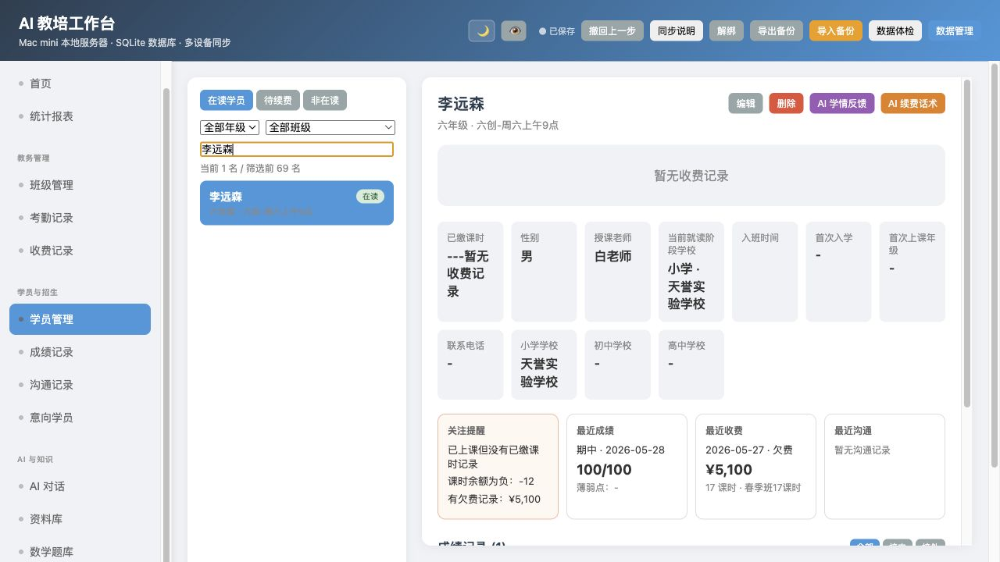
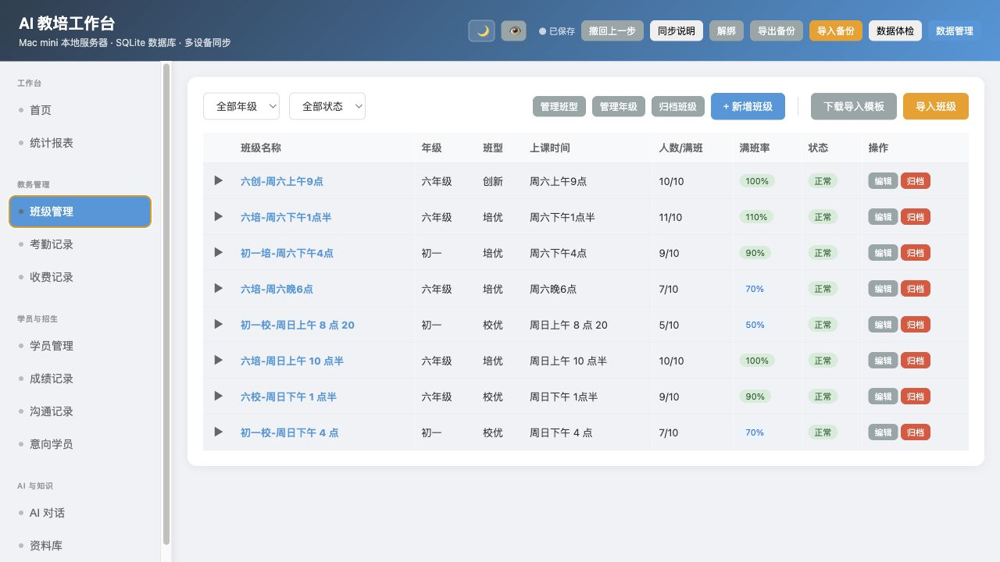
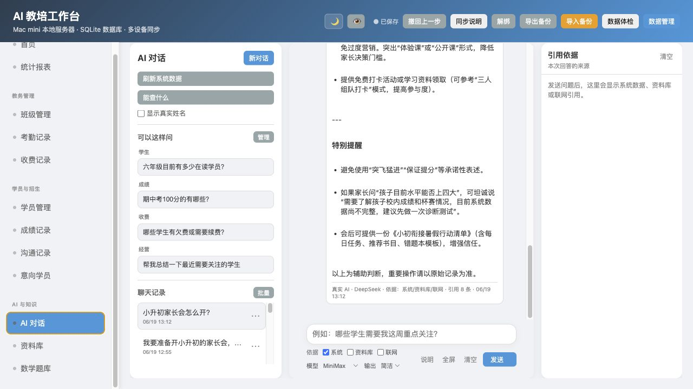
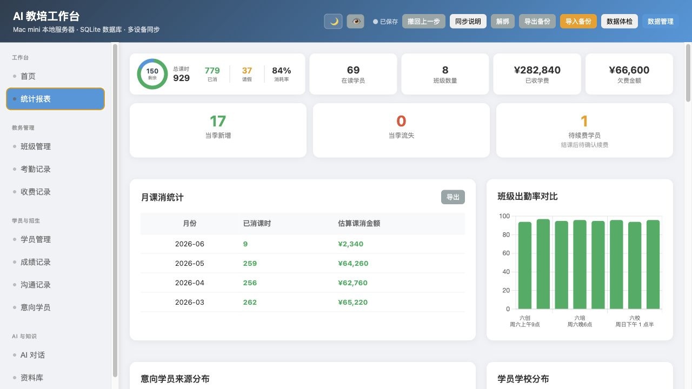

AI 教培工作台：基于原系统的优化方案
这一版不推翻现有可用系统，只把你批注过的入口重新整理：首页更像“今天先处理什么”，学员详情更像“单个学生复盘”，班级概览只做上课前摘要，AI 从查数据继续走向经营复盘和行动建议。
处理原则
首页统计和今日工作台都可以点，但主处理入口放在今日工作台，避免同一件事出现两个强入口。
欠费、缺勤、课时不足不在每个列表都打标，优先由首页动作卡和数据体检统一承接。
AI 输入区的风格可以后续继续优化，本轮先把依据、复盘和准确性做好。
代码里已有归档快照、归档搜索、放回列表、彻底删除和后端动作接口，本轮只验收不重做。
15 条批注处理总表
| 批注 | 处理决定 | 修订方案 | 优先级 |
|---|---|---|---|
| 1 顶部统计可点击 | 采纳 | 统计卡可点到对应模块；欠费金额只作为总览，不和今日工作台抢主入口。 | 第一批 |
| 2 今日工作台变动作 | 采纳并强化 | 待续费/欠费卡点击后展示优先处理 3 人：学生、原因、建议动作。 | 第一批 |
| 3 快捷按钮分组 | 采纳但轻量 | 分为记录、新增、工具三组，仍保持一屏可扫，不做复杂菜单。 | 第一批 |
| 4 待办空状态 | 采纳 | 空时显示“今天可做”：补考勤、查欠费、写沟通、经营复盘。 | 第一批 |
| 5 班级概览遗漏 | 补充 | 保留首页班级概览，但定位为“上课前摘要”，不替代班级管理。 | 第一批 |
| 6 学员列表风险标记 | 不做 | 你已确认冗余，首页直接点进去处理即可。 | 不做 |
| 7 学员详情截图不足 | 已补截图 | 基于真实详情页，只建议压缩摘要，不再凭空加一堆字段。 | 第一批规划 |
| 8 最近动态 | 收敛 | 学员详情只放“最近摘要”，完整成绩/沟通/收费仍去原模块。 | 第二批 |
| 9 班级续费节点 | 删减 | 只保留计划/已进行/剩余课次，不额外写续费节点。 | 第一批 |
| 10 班级健康风险 | 不重复 | 不在班级卡片叠加欠费/缺勤/课时不足，避免和首页、体检重复。 | 不做 |
| 11 归档快照 | 已验证 | 代码已有 archivedStudentSnapshot 和归档班级管理，本轮只做验收。 | 验收 |
| 12 老师提问输入区 | 暂不动 | 本轮先保留，避免 AI 页面又进入大改。 | 后续 |
| 13 右侧依据 | 采纳但压缩 | 右侧做窄栏/折叠“本次依据”，无依据显示未读取资料库。 | 第一批 |
| 14 AI 回归测试 | 采纳并升级 | 固定测试集不只查信息，也测“复盘、判断、建议动作”。 | 第一批 |
| 15 一键经营复盘 | 采纳 | 新增入口：周报/月报、欠费、课消、招生、风险学生，先只读生成。 | 第一批 |
截图 1：首页上半屏
保持当前首页结构，但把“指标”调整成“动作入口”。

1 2 3 4统计卡可以点击跳转到对应模块，例如在读、班级、收费。欠费金额也可以点，但视觉上弱一点。
“待续费/欠费 1/15”点击后直接进入处理列表，下面露出前 3 个优先对象。
不做复杂大菜单，只分成三组：记录、招生、工具。
没有待办时，不只显示空白，而是给 3 个轻建议。
截图 2：首页班级概览
这是你指出我漏看的区域。它有必要保留，但功能要和班级管理分开。

5 6 7首页班级概览保留，因为老师打开首页常常想知道“最近哪些班上到哪里了”。
显示“12/17、剩余 5 次”就够，不再额外标“续费节点”。
欠费、缺勤、课时不足在首页动作卡和数据体检已经有入口。
截图 3：学员详情
这次补了点击学员后的真实详情截图。这里不再建议左侧列表加风险标记。

8 9你说得对，欠费/课时风险从首页入口点进来即可，左侧列表再加会乱。
右侧已经有收费、成绩、沟通摘要。后续只建议再压缩排版，不做一条巨大的混合动态流。
截图 4：班级管理
班级管理保持业务维护属性，不承担首页提醒和数据体检功能。

10 11班级人数、课次进度是班级管理该看的；欠费、缺勤、课时不足不在这里重复铺开。
代码里已有 archivedStudentSnapshot，归档班级管理支持搜索、展开、放回列表、彻底删除。
截图 5：AI 对话
AI 不是只查数据。真正价值应转向复盘、判断和行动建议。

12 13 14你已确认“老师提问”的输入区可以先按现状来。AI 页面不继续大改外观。
右侧可以保留“本次依据”，但默认压缩，不占太多空间。
固定测试集不仅测“能不能查到信息”，还要测是否答非所问、是否能给行动建议。
截图 6：统计报表与一键经营复盘
这是一项新增能力：它比“问 AI 查一个数字”更有价值。

15入口可以放在首页今日工作台，也可以放在统计报表顶部。
你自己点一下能查到数字，所以 AI 的价值应是“帮你整合、判断、排序、给下一步动作”。
优化后首页沙盘
这是基于原首页结构做的缩小演示，不是新系统。重点展示：顶部统计保留、今日工作台变动作、快捷按钮轻分组、班级概览降级为摘要。
班级概览：只做上课前摘要
可执行修改任务
首页动作化
- 统计卡补跳转，但欠费金额不做强入口。
- 今日工作台卡片点击后显示优先处理名单。
- 快捷按钮轻分组：记录、新增、工具。
- 待办空状态显示 3 个建议动作。
- 首页班级概览保留为“上课前摘要”。
AI 可用性
- 右侧依据栏压缩，可折叠。
- 维护 AI 问答回归测试集。
- 增加一键经营复盘入口。
- 复盘输出：结论、优先名单、建议动作。
- 避免“家长会怎么开”返回学生清单。
班级与学员
- 归档班级快照已存在，只验证。
- 不做左侧学员风险标记。
- 不在班级卡片叠加欠费/缺勤风险。
- 学员详情后续只做紧凑摘要优化。
- 班级课次不显示“续费节点”文字。